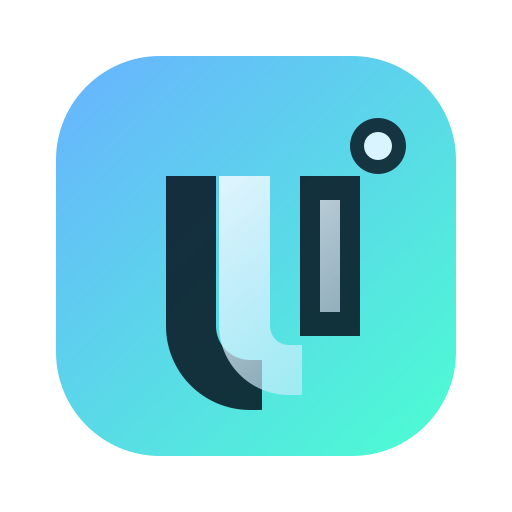

Wydajnosc
Cache plikow, szybkie uruchamianie i wielowatkowe pobieranie.

Launcher Minecraft nowej generacji
UltraClient to launcher Minecraft z obsluga kont Microsoft, wieloma instancjami, managerem modow i szybkim aktualizatorem. Celem projektu jest szybki start gry, stabilnosc i nowoczesny wyglad bez zbednych krokow.
Cache plikow, szybkie uruchamianie i wielowatkowe pobieranie.
Bezpieczne przechowywanie tokenow i walidacja danych.
Instancje, mody, shadery, resource packi i skiny dla konta.
Pobierz najnowszy setup UltraClient.
Dolacz na oficjalny serwer UltraClient. Tam sa ogloszenia, support, testy wersji i szybka pomoc techniczna.
Przejdz na Discord UltraClient